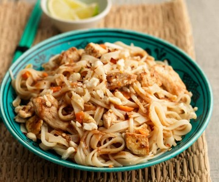

Carbonara

Recipe for a delicious Pad thai
Discover how to make superb Pad thai. With the right technique, you can make it perfect every time
Ingredients:
- Kosher salt
- 8 oz. wide rice noodles
- 2 tbsp. lime juice
- 2 tbsp. brown sugar
- 1 tbsp. fish sauce
- 1 tbsp. low-sodium soy sauce
- 1/4 tsp. cayenne pepper
- 2 tbsp. vegetable oil
- 1 bell pepper, thinly sliced
- 2 cloves garlic, minced
- 2 eggs, lightly whisked
- 1 lb. shrimp, peeled and deveined
- Freshly ground black pepper
- 2 green onions, thinly sliced
- 1/4 c. roasted peanuts, chopped
Steps:
- In a large pot of salted boiling water, cook noodles until al dente. Drain.
- In a small bowl, whisk together lime juice, brown sugar, fish sauce, soy sauce, and cayenne pepper. Set aside.
- In a large nonstick pan over medium-high heat, heat oil. Add bell pepper and cook until tender, about 4 minutes. Stir in garlic and cook until fragrant, about 1 minute more. Add the shrimp and season with salt and pepper. Cook until pink, about 2 minutes per side.
- Push the shrimp and vegetables to one side of the pan and pour in the egg. Scramble until just set then mix with the shrimp mixture. Add the cooked noodles and toss until combined. Pour in the lime juice mixture and toss until the noodles are coated.
- Garnish with green onions and roasted peanuts before serving.
Return to main page